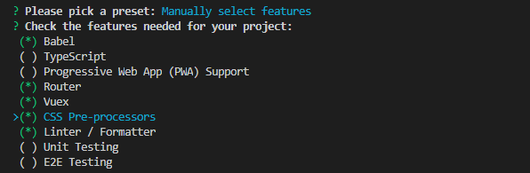

vue cli3.0快速搭建项目详解（强烈推荐）
这篇文章主要介绍下vue-cli3.0项目搭建，项目结构和配置等整理一下，分享给大家。
一、介绍
Vue CLI 是一个基于 Vue.js 进行快速开发的完整系统。有三个组件：
CLI：@vue/cli 全局安装的 npm 包，提供了终端里的vue命令（如：vue create 、vue serve 、vue ui 等命令）
CLI 服务：@vue/cli-service是一个开发环境依赖。构建于 webpack 和 webpack-dev-server 之上（提供 如：serve、build 和 inspect 命令）
CLI 插件：给Vue 项目提供可选功能的 npm 包 （如： Babel/TypeScript 转译、ESLint 集成、unit和 e2e测试 等）
二、安装
1、全局安装过旧版本的 vue-cli(1.x 或 2.x)要先卸载它，否则跳过此步：
1 npm uninstall vue-cli -g //或者 yarn global remove vue-cli
2、Vue CLI 3需要 nodeJs ≥ 8.9 (官方推荐 8.11.0+，你可以使用 nvm 或 nvm-windows在同一台电脑中管理多个 Node 版本）。
（2）下载安装nodeJs，中文官方下载地址：http://nodejs.cn/download/
3、安装@vue/cli（Vue CLI 3的包名称由 vue-cli 改成了 @vue/cli）
1 cnpm install -g @vue/cli //yarn global add @vue/cli
vue -V 检查vue版本号
三、使用
1、vue create 搭建新项目
（1）新建项目：
*官方提示：如果你在 Windows 上通过 minTTY 使用 Git Bash，交互提示符并不工作，必须通过 winpty vue.cmd create hello-world 启动这个命令
1 | vue create <Project Name> //文件名 不支持驼峰（含大写字母） |
具体操作如下：
首先，会提示你选择一个preset（预设）：
① 除最后两个，其他选项都是你此前保存的预设配置（如下图第一个“ my-default”是我之前保存的预设配置，如今便可以直接用了）：

如果没有配置保存过，则只有以下两个选项：
② default（babel，eslint）：默认设置（直接enter）非常适合快速创建一个新项目的原型，没有带任何辅助功能的 npm包
③ Manually select features：自定义配置（按方向键 ↓）是我们所需要的面向生产的项目，提供可选功能的 npm 包

手动选择需要添加的配置项：


1 ? Check the features needed for your project: (Press <space> to select, <a> to toggle all, <i> to invert selection) 2 >( ) Babel //转码器，可以将ES6代码转为ES5代码，从而在现有环境执行。 3 ( ) TypeScript// TypeScript是一个JavaScript（后缀.js）的超集（后缀.ts）包含并扩展了 JavaScript 的语法，需要被编译输出为 JavaScript在浏览器运行，目前较少人再用 4 ( ) Progressive Web App (PWA) Support// 渐进式Web应用程序 5 ( ) Router // vue-router（vue路由） 6 ( ) Vuex // vuex（vue的状态管理模式） 7 ( ) CSS Pre-processors // CSS 预处理器（如：less、sass） 8 ( ) Linter / Formatter // 代码风格检查和格式化（如：ESlint） 9 ( ) Unit Testing // 单元测试（unit tests） 10 ( ) E2E Testing // e2e（end to end） 测试
选择完后直接enter，然后会提示你选择对应功能的具体工具包，选择自己擅长或者使用广泛的（方便遇到问题时百度），简介如下：
①是否使用history router：

Vue-Router 利用了浏览器自身的hash 模式和 history 模式的特性来实现前端路由（通过调用浏览器提供的接口）
② css预处理器
主要为css解决浏览器兼容、简化CSS代码 等问题

③ ESLint：
提供一个插件化的javascript代码检测工具，ESLint + Prettier //使用较多

④ 何时检测：

⑤ 单元测试 ：
? Pick a unit testing solution: (Use arrow keys) > Mocha + Chai //mocha灵活,只提供简单的测试结构，如果需要其他功能需要添加其他库/插件完成。必须在全局环境中安装 Jest //安装配置简单，容易上手。内置Istanbul，可以查看到测试覆盖率，相较于Mocha:配置简洁、测试代码简洁、易于和babel集成、内置丰富的expect
⑥ 如何存放配置 ：

⑦ 是否保存本次配置（y:记录本次配置，然后需要你起个名; n：不记录本次配置）：

⑧ 搭建完成：

2，项目结构

精简了很多，但还是和vue2.0有很多区别的，基本的用法变化不是特别大
① vuex（状态管理）：
vue cli 2 中 ：vuex是搭建完成后自己npm install的，并不包括在搭建过程中。可以看到vue cli 2的vuex默认文件夹（store）又包含了三个js文件：action（存放一些调用外部API接口的异步执行的的方法，然后commit mutations改变mutations 数据）、index（初始化mutations 数据，是store的出口）、mutations（处理数据逻辑的同步执行的方法的集合，Vuex中store数据改变的唯一方法commit mutations）
vue cli 3 中：vuex是包含在搭建过程供选择的预设。vue cli 3 中默认只用一个store.js代替了原来的store文件夹中的三个js文件。action、mutations、state以及store 的 getters 的用法有很多
② router （路由）：
vue cli 2 ：“ router/index.js ”
vue cli 3：“router.js”（用法和做的事都一样）
③ 去掉 static 、 新增 public 文件夹
vue cli 2 ：static 是 webpack 默认存放静态资源的文件夹，打包时会直接复制一份到dist文件夹不会经过 webpack 编译
vue cli 3 ：摒弃 static 新增了 public 。vue cli 3 中“静态资源”两种处理方式：
经webpack 处理：在 JavaScript 被导入或在 template/CSS 中通过“相对路径”被引用的资源会被编译并压缩
不经webpack 处理：放置在 public 目录下或通过绝对路径被引用的资源将会“直接被拷贝”一份，不做任何编译压缩处理
④ index.html ：
vue cli 2 ：“index.html ”
vue cli 3 ：“public/index.html ”此模板会被 html-webpack-plugin 处理的
⑤ src/views：
vue cli 3 的 src文件夹 新增 views文件夹 用来存放 “页面”，区分 components（组件）
⑥ 去掉 build（根据config中的配置来定义规则）、config（配置不同环境的参数）文件夹 ：
vue cli 3 中，这些配置 你可以通过 命令行参数、或 vue.config.js （在根目录 新建一个 vue.config.js 同名文件）里的 devServer 字段配置开发服务器
⑦ babel.config.js：
配置Babel 。Vue CLI 使用了 Babel 7 中的新配置格式 babel.config.js。和 .babelrc 或 package.json 中的 babel 字段不同，这个配置文件不会使用基于文件位置的方案，而是会一致地运用到项目根目录以下的所有文件，包括 node_modules 内部的依赖。官方推荐在 Vue CLI 项目中始终使用 babel.config.js 取代其它格式。
⑧ 根目录的一些其他文件的改变：
之前所有的配置文件都在vue create 搭建时preset预设 或者 后期可以通过 命令参数 、 vue.config.js 中配置
根据需要在根目录下新建 vue.config.js自行配置，eg：（简单配置，更多配置详情参见官网：https://cli.vuejs.org/zh/config/）
1 module.exports = { 2 baseUrl: '/',// 部署应用时的根路径(默认'/'),也可用相对路径(存在使用限制) 3 outputDir: 'dist',// 运行时生成的生产环境构建文件的目录(默认''dist''，构建之前会被清除) 4 assetsDir: '',//放置生成的静态资源(s、css、img、fonts)的(相对于 outputDir 的)目录(默认'') 5 indexPath: 'index.html',//指定生成的 index.html 的输出路径(相对于 outputDir)也可以是一个绝对路径。 6 pages: {//pages 里配置的路径和文件名在你的文档目录必须存在 否则启动服务会报错 7 index: {//除了 entry 之外都是可选的 8 entry: 'src/index/main.js',// page 的入口,每个“page”应该有一个对应的 JavaScript 入口文件 9 template: 'public/index.html',// 模板来源 10 filename: 'index.html',// 在 dist/index.html 的输出 11 title: 'Index Page',// 当使用 title 选项时,在 template 中使用：<title><%= htmlWebpackPlugin.options.title %></title> 12 chunks: ['chunk-vendors', 'chunk-common', 'index'] // 在这个页面中包含的块，默认情况下会包含,提取出来的通用 chunk 和 vendor chunk 13 }, 14 subpage: 'src/subpage/main.js'//官方解释：当使用只有入口的字符串格式时,模板会被推导为'public/subpage.html',若找不到就回退到'public/index.html',输出文件名会被推导为'subpage.html' 15 }, 16 lintOnSave: true,// 是否在保存的时候检查 17 productionSourceMap: true,// 生产环境是否生成 sourceMap 文件 18 css: { 19 extract: true,// 是否使用css分离插件 ExtractTextPlugin 20 sourceMap: false,// 开启 CSS source maps 21 loaderOptions: {},// css预设器配置项 22 modules: false// 启用 CSS modules for all css / pre-processor files. 23 }, 24 devServer: {// 环境配置 25 host: 'localhost', 26 port: 8080, 27 https: false, 28 hotOnly: false, 29 open: true, //配置自动启动浏览器 30 proxy: {// 配置多个代理(配置一个 proxy: 'http://localhost:4000' ) 31 '/api': { 32 target: '<url>', 33 ws: true, 34 changeOrigin: true 35 }, 36 '/foo': { 37 target: '<other_url>' 38 } 39 } 40 }, 41 pluginOptions: {// 第三方插件配置 42 // ... 43 } 44 };
vue-cli升级到3之后，减少了很多的配置文件，将所有的配置项都浓缩到了vue.config.js这个文件中，所以学懂并会用vue.config.js文件很重要。
这里有一篇关于vue-cli3的全面配置的文章供大家参考，https://segmentfault.com/a/1190000017008697
热更新配置
在vue.config.js添加
1 chainWebpack: config => { 2 // 修复HMR 3 config.resolve.symlinks(true); 4 },
修改css部分热更新还需要注释掉 //extract: true,
css: { //extract: true,// 是否使用css分离插件 ExtractTextPlugin sourceMap: false,// 开启 CSS source maps loaderOptions: {},// css预设器配置项 modules: false// 启用 CSS modules for all css / pre-processor files. },
这样，热更新配置就完成了！
3、vue ui 图形化界面创建项目
1 | vue ui |
这个就不多介绍了，可视化界面创建新项目更直观，也可以添加一些项目依赖，插件和配置。
文章就介绍到这里，希望能帮大家对于vue-cli3.0有更深的理解。